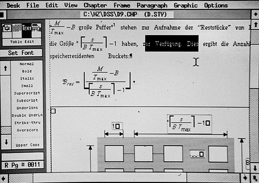

Over mij
Achtergrond
Ik ben Martin en kom uit Apeldoorn. Ik ben bijna 50 maar ben al op mijn 18e begonnen als ICT'er. Mijn vader was destijds al een aantal jaren Systeembeheerder bij een groot bedrijf en volge allerlei cursussen. Als enig kind kon ik kiezen: Of alleen op mijn kamer spelen, of met mijn vader meekijken. Maar dan moest ik wél stil zijn. Ik koos desondanks voor het laatste en kreeg zo veel mee van dataverwerking. Dat ging destijds nog over ponsmachines en tickertapes en floppy's van 8 inch groot. Maar ook over mainframes ter grote van een flink tuinhuis met de rekenkracht van nauwelijks het equivallent van een huidige robotstofzuiger.
Grafisch vormgever
Een van de dingen die mij vormde was dat er al heel snel computers in huis kwamen, maar ook printers. Om uit te proberen. Door mijn vader, als eersrte natuurlijk, maar al snel speelde ik er ook mee. Beeldscherem veranderden van monocolor (amber of green) naar 4 kleuren schermen. Een revolutie! Met programma's als Access 20/20 en Harvard Graphics (voorloper Excel) kon je kleurengrafieken op het schetm toveren. Met de komst van de Apple Script II kleurenprinter konden ze zelfs op papier komen. Daarmee leerde ik de Desktop Publishing Wereld avant la lettre kennen.
DTP'er
Ik kreeg een baan als DTP'er bij een franchise ondernemer in maatwerk object oriented software voor leden administraties van kerken en veringingen. Hiervoor schreef ik de teksten, maar gaf ze ook vorm met behulp van Xerox Ventura en Corel Draw. Met name ventura was een tag-based opmaakprogramma met een stijl bestand en een platte-tekst bestand met tags. Het lijkt achteraf de basis voor wat we nu HTML en CSS noemen voor websites.
Developer
Na dit DTP avontuur heb ik mij toch gestort op de ICT wereld omdat daar met mijn kennis ook de bomen tot aan de hemel rijkte; zeker in die tijd.
Ik heb diverse functies bekleed, die vooral technisch en verkooptechnisch van aard waren.
Ik vind het een uitdaging om nu mijn skills te verbreden naar de Development kant.
Ik kan nu hetgeen ik jarenlang verkocht en adviseren ook zelf gaan leren ontwikkelen. Hoe gaaf is dat!